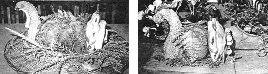

This holiday centerpiece-made from squash, seeds, and such-is certainly . . .
Juanita Browne What could be a more appropriate decoration for Thanksgiving than a turkey centerpiece made from the fruits of a fall harvest! In fact, variations of this golden bird which is both delightful and easy to create grace and brighten our holiday table each year.
The gobbler's head consists of a mature crookneck squash with a portion of the stem left on to serve as a beak. It's often necessary to cut off a bit of the squash's bottom so it'll stand upright and not be toppled by dinner time table wobbles. (If you do this, be sure to place the head on a small piece of cardboard to protect your table's finish.)
Next, add a small pumpkin (it'll be the bird's body), connecting it to the head with a long, thin nail. Two more nails are then used to attach the patty pan squash that forms the tail.
The fan feathers consist of two dozen corn husks that have been soaked in water for 30 minutes to make them pliable. Simply shake off the excess liquid and roll a dozen of the shucks into large, loose curls, wrapping each one with a rubber band.
Then, turning to the other husks, cut a dozen rounded petal shapes . . . and use straight pins to attach them in a circle around the outer edges of the patty pan tail.
Later, when the shuck curls are dry, remove the rubber bands and pin these feathers in a symmetrical pattern on the center of the tail.
To fashion your fowl's snood and wattle, simply pin one long pepper on the top of the head, and another along the underside of the gobbler's neck.
Finally, affix large seedpods to serve as the turkey's eyes, and use dried bracken fern (or any similar material) to make its wings and additional feathers.
This big, beautiful bird will delight your dinner guests . . . and, after the feast is over, it can form the basis for some lighter-and strictly vegetarian-meals!
|
 |
|
|